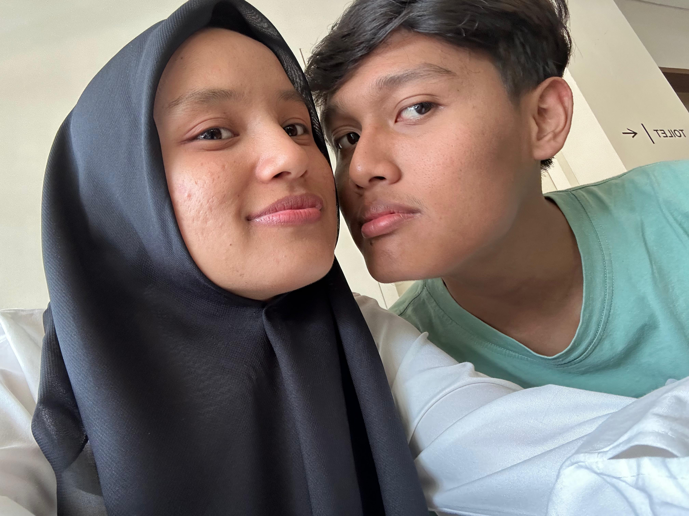
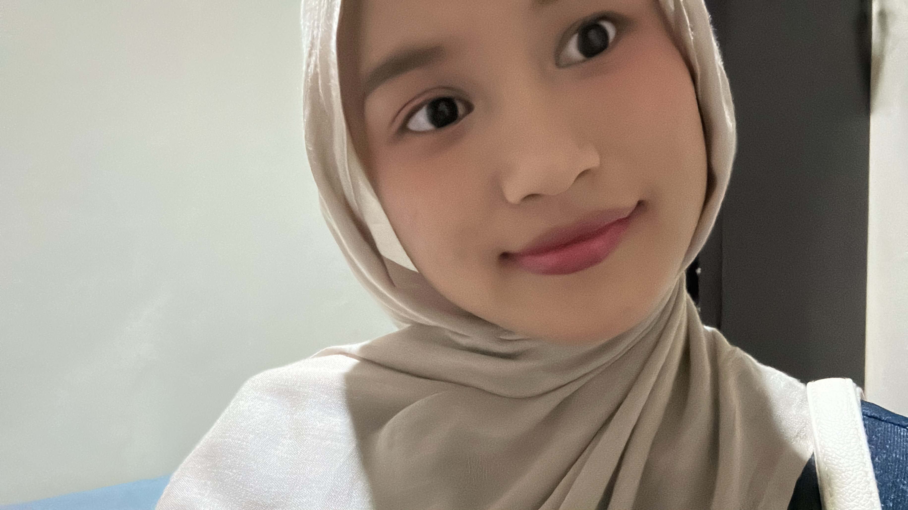
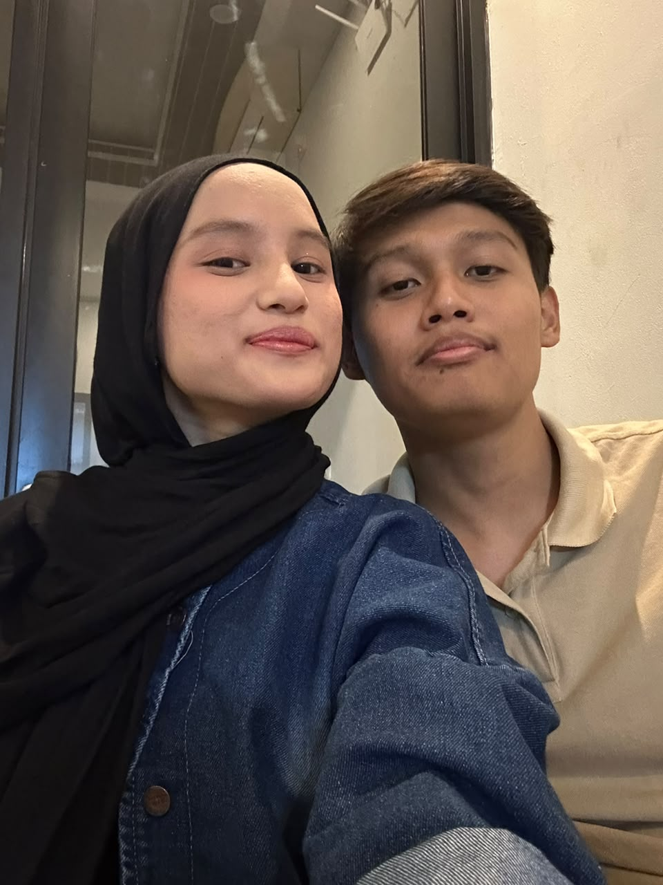
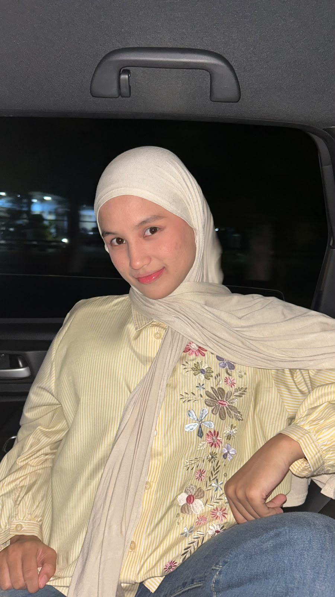

you mean everything
my safe place
always on my mind
only you ♥
forever with you
my favorite person
stay with me
my happiest place
you make me smile
endless love ♥
so grateful for you
you are my home
my sun and stars
precious memories
better together
love you more ♥



